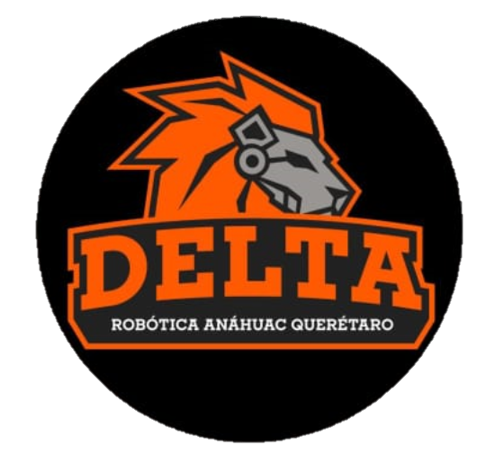

 Delta's Madness
Simulador de impactos meteóricos y estrategias de deflexión
Español
English
⚙️ Simulación del asteroide
Buscar asteroide por nombre:
Buscar
⚙️ Asteroide personalizado
Diámetro (m)
Tipo de objeto
Rocoso (asteroide tipo S)
Metálico (asteroide tipo M)
Cometario (hielo y roca)
Velocidad (m/s)
Ángulo de entrada (°)
Gravedad local (m/s²)
üìç Ubicaci√≥n del Impacto
Latitud
Longitud
üõ∞Ô∏è Parámetros de Desv√≠o
Tiempo antes del impacto (años)
Desplazamiento requerido (m)
Método de cálculo de nave:
Especificar velocidad de impacto (m/s)
Especificar masa de la nave (kg)
Valor de la nave
üöÄ Calcular Todo
üåé Planeta Tierra
üí• Análisis de Impacto
Analizando...
Presiona
üöÄ Calcular Todo
para ver resultados.
üõ∞Ô∏è Análisis de Desv√≠o
Analizando...
Presiona
üöÄ Calcular Todo
para ver resultados.
⚖️ Comparación de Métodos de Desvío
Los métodos se mostrarán después del cálculo.